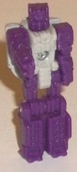
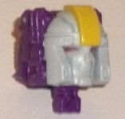
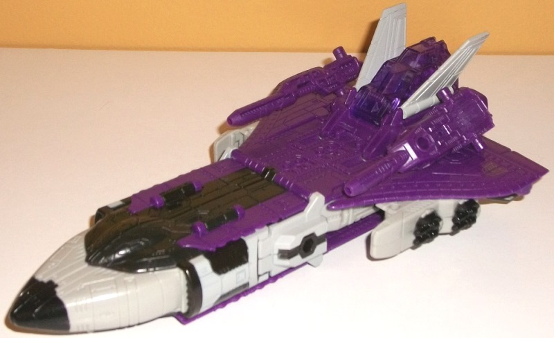
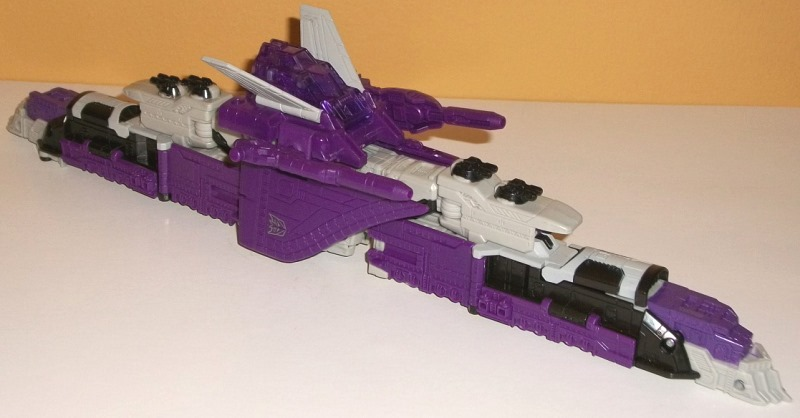
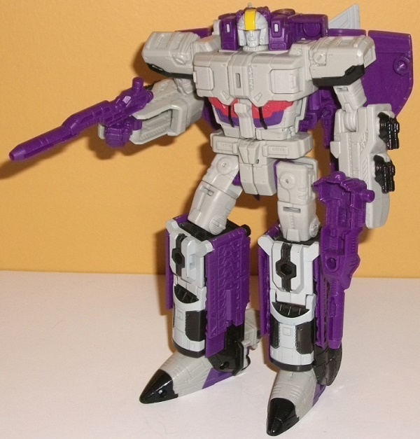

Allegiances
: Decepticon
Size
: Voyager
Difficulty of Transformation to Shuttle
:
Easy
Difficulty of Transformation to Train
:
Medium
Color Scheme
: Moderately dark purple,
very light gray, charcoal black, and some dull pale semi-metallic red,
transparent purple, and dull yellow
Rating
: 8.0
(NOTE: Because this is a repaint, this is not a full-blown review. This mainly covers any changes made to the mold and the color scheme, and merely compares it to Titans Return Sentinel Prime w/ Infinitus. For a review on the mold itself, read the review of Titans Return Blaster w/ Infinitus here .)


Darkmoon-- with the
exception of Astrotrain's face-- is a straight repaint of Infinitus. Unfortunately,
this means that in robot mode the toy looks like a purple miniature Sentinel
Prime with a light gray body. There's no paint detailing on the Titan Master's
robot mode at all, perhaps to de-emphasize this fact, but still... kind
of a bummer Darkmoon isn't his own character with his own head, at the
very least. As for Astrotrain's headsculpt, it looks quite good (with the
exception of the rectangular purple bits that stick out behind the top
of the round head). The paint detailing is excellent, with the round helmet
with a yellow line down the middle of the forehead, red eyes, and the rest
of the face a nice light gray. The face looks pretty standard, but the
helmet mold detailing is fantastic-- beyond the overall "dome" look of
the helmet, there's several little lines and minor details here and there
that's fairly impressive for such a small toy.



As far as Astrotrain
himself, Hasbro really did a dynamite job with his color scheme. His main
colors are a very light gray (thankfully not milky but flat-- it's not
the best color in the world, but it works pretty well as flat "metal"),
a somewhat dark shade of purple, and charcoal black. I would've liked a
more straightforward black, but the charcoal black still does look pretty
good and contrasts with the light gray extremely well. I in particular
like all the interaction of the charcoal black and light gray paint apps
on the lower robot legs, shuttle nosecone/feet, and shoulders. Because
of the color breakup, the gray is more prevalent in robot mode, whereas
the purple is much more prevalent in the vehicle modes, with the nice purple
wings either used for the sides of the train or as the... well... wings...
for the space shuttle mode. Just like the black, the purple contrasts extremely
well against the gray, but it doesn't contrast quite as well with the black.
I think the purple needed to be a bit lighter to contrast with the black,
but then it wouldn't contrast enough with the gray, so... out of the two
options, I think they made the right choice. On the robot abs, there's
some nifty purple and pale red paint apps as well-- the latter is semi-metallic
with some glitter in it, and looks nice as an accent color. Unfortunately,
nearly all of Astrotrain's paint apps are aimed at making an awesome-looking
robot mode; his shuttle cockpit is completely unpainted, along with the
train wheels. At least there's some purple paint used on parts of the train
fronts, and light gray paint on the tailfins. Finally, there's a nice shade
of transparent purple-- just a touch darker than the "normal" purple--
used for the Titan Master cockpit, which is another great color shade.
Beyond the new face
on Darkmoon, no new mold changes have been made to Astrotrain.
Titans Return Astrotrain
is definitely what this mold was made for, with a great color scheme that
pops, particularly in robot mode. The new headsculpt is also quite solid,
and he's got a good number of paint apps-- unfortunately, a bit TOO much
effort was put into making the robot mode look good, with not enough paint
apps/color variation on much of the alt modes, particularly in space shuttle
mode. I think this emphasizes all the more just how much the alternate
modes are secondary on this toy. Still, definitely a fairly solid update
of Astrotrain and recommended over Sentinel (Darkmoon is a disappointment,
though).
Review by Beastbot